Après cinq jours de navigation (parfois mouvementés), nous apercevons les premières terres. Nous pointons l’étrave du bateau entre les îles de São Vicente et de Santo Antão. Le vent s’y précipite aussi, l’anémomètre monte jusqu’à 34 noeuds (soit une soixantaine de kilomètres par heure). Un des leurres de pêche que nous traînons derrière nous se détache, nous réduisons rapidement la voilure. Nous contournons un rocher depuis lequel un phare blanc domine la baie de Mindelo. Cette ville sera notre point d’arrivée au Cap-Vert. Les guides nautiques décrivent la baie comme « jonchée d’épaves, navigation prudente conseillée ». Nous attendons quelques dizaines de minutes qu’un agent de la marina nous conduise à une place libre. Cette pause nous permet d’écouter l’ambiance. Je ne suis jamais entré en Afrique et j’ai beaucoup d’a priori sur cet archipel. Un vieux ferry éraflé nous dépasse. Nous entendons des ouvriers s’alpaguer à bâbord. Ils construisent un nouveau terminal pour bateaux de croisière. À tribord, nous apercevons les toits colorés des maisons et quelques klaxons sont portés jusqu’à nous.
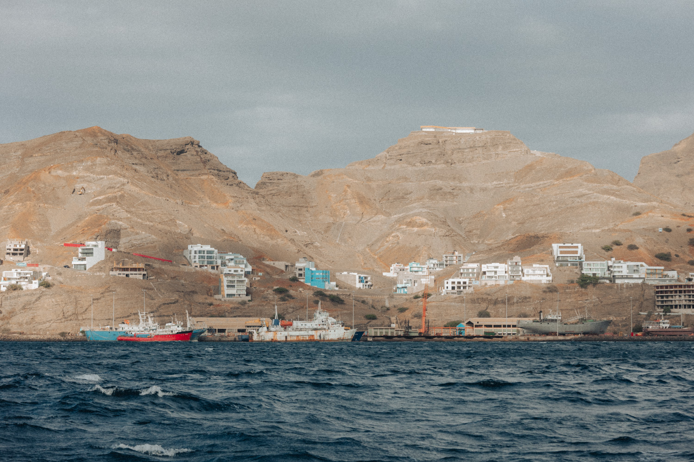
Le lendemain, je me lève tôt. J’ai besoin de consulter un médecin et me rends donc à l’hôpital. Ne sachant pas ce que je vais trouver comme climat à l’extérieur de la marina, je ne prends que le strict minimum. Le port de plaisance de Mindelo est une enclave flottante, fermée par un portail gardé. Elle fait figure d'ambassade européenne avec tous les bateaux de voyageurs stationnés à l’intérieur. Dès que je quitte la marina je suis plongé dans l’ambiance cap-verdienne. Je suis de suite accosté par un mendiant dont j’ai du mal à me débarrasser. Je suis d’autant plus aux aguets jusqu’à atteindre l’hôpital. J’y reste plus de trois heures, la majorité du temps à attendre. J’en profite pour observer les personnes et les lieux. Je rentre au bateau plus sereinement en poursuivant ma découverte de cette nouvelle culture. Je fais un petit détour pour grimper sur une colline qui surplombe Mindelo. Je zigzague entre les chiens errants, alors tous endormis. La vue sur la ville est splendide. On peut apercevoir les maisons colorées bordant la baie devenir progressivement de plus en plus monochrome. Elles sont toutes grises en périphérie. En rentrant, je me rends en fait compte qu'elles ne sont pas peintes : les parpaings sont à nus.
Remis de notre navigation, nous nous lançons dans quelques bricolages avec Loann tandis que Clément monte la vidéo sur notre traversée du Golfe de Gascogne. Au menu aujourd’hui : trouver pourquoi les feux de navigation ne s’éteignent pas quand nous les débranchons.
Aujourd’hui, c’est lundi. Et lundi rime avec… formalités administratives ! Nous nous y rendons pour déclarer notre arrivée sur le territoire. Lundi rime aussi avec… promenade ! Alors après avoir mangé rapidement, nous partons chercher un aluguer. En voici la définition dans les guides de voyages : « minibus ou pickup de transport collectif. Ils attendent d’être plein pour partir et prennent des passagers sur leur trajet ». On peut difficilement écrire une description plus concise de ce mode de transport. Le dépaysement continue ! Après quelques dizaines de minutes de route, le minibus s’arrête et nous laisse descendre. Nous sommes alors au pied du Monte Verde, la plus haute montagne de l’île de São Vicente. Une petite route pavée s’enroule autour de celle-ci nous offrant différents panorama sur l’île. Une ancienne station de communication nous empêche d’accéder au sommet. Nous redescendons tranquillement avant d’être pris en stop par un restaurateur… en crêperie. Le hasard fait bien les choses !
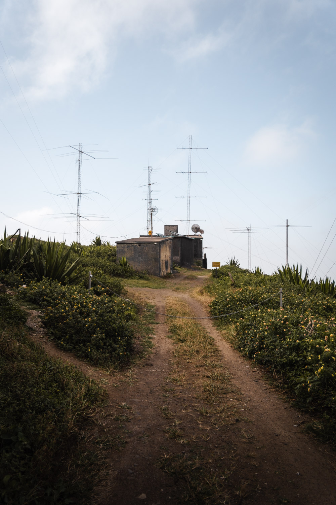
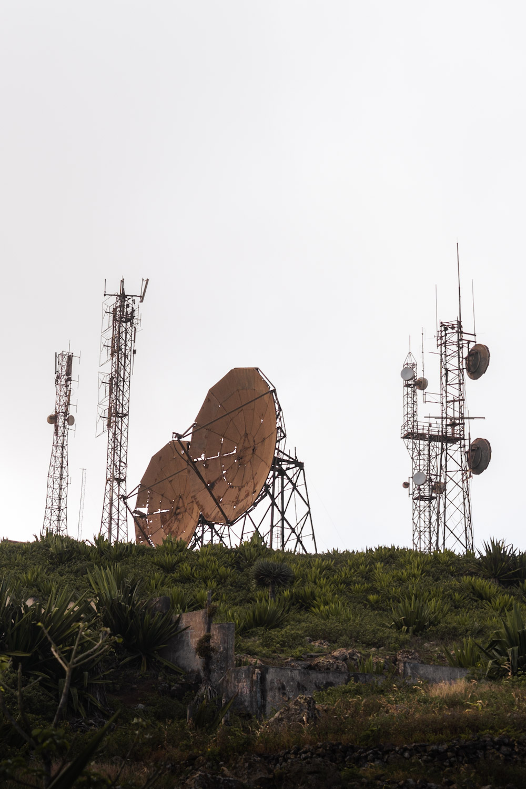
Nouvelle journée au port signifie nouveaux bricolages, lavage du linge et plein d’eau. Une fois ces tâches effectuées, nous allons faire quelques courses alimentaires et pour le bateau. Nous rencontrons au marché municipal un habitant qui nous guide avec un peu (trop) d’entrain jusqu’à une boulangerie. Nous y achetons de quoi préparer un pique-nique pour le lendemain. Nous préparons en effet une randonnée sur l’île de Santo Antão.
Levés à 5h20 pour prendre le bateau de 7h, nous sommes curieux et inquiets de monter dans le ferry que nous avions aperçu en arrivant. À peine sortie de la baie, les vagues le frappent de flanc, faisant trembler toute sa structure…
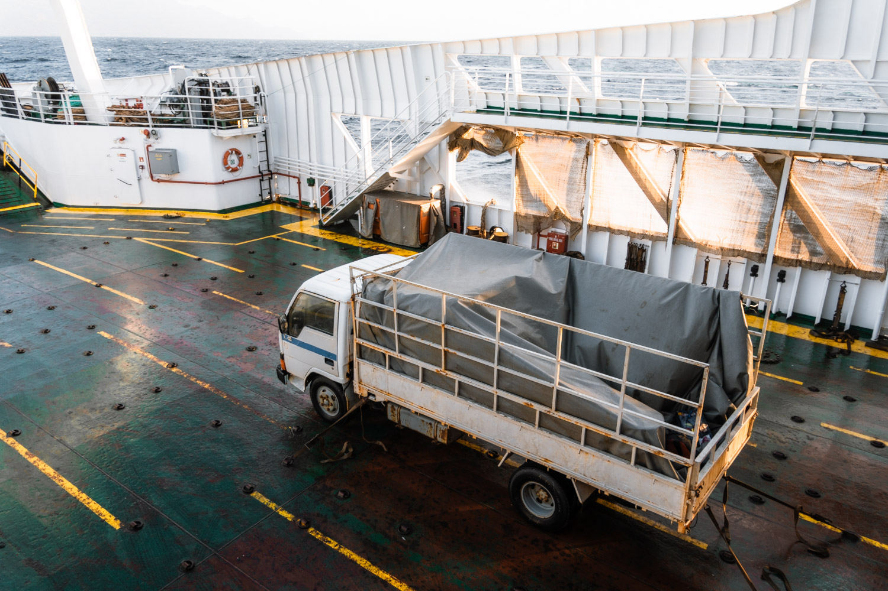
Une heure plus tard, nous débarquons à Porto Novo où nous sommes accueillis par une horde d’aluguer tous plus affamés les uns que les autres de riches touristes. Nous évitons le tumulte et partons à la recherche d’un câble pour mon appareil photo. L’objectif de Clément est en train de rendre l’âme et je n’avais pas prévu suffisamment de batterie pour filmer. Une fois ce cordon trouvé, il ne nous faut pas longtemps pour trouver un aluguer déambulant à la recherche de passagers laissés sur le tas. Nous montons dans la benne du pick-up. Direction le cratère ! Le 4x4 zigzague sur les petites routes et le vent nous décoiffe. Nous sommes hilares de voir la mer s’éloigner petit à petit depuis nos bancs parallèles à la route. Pourtant, nous sommes heureux d’arriver en haut, la température étant nettement descendue.
La randonnée commence dans un cratère. Le fond de celui-ci est plat et de nombreux champs y sont disposés. Nous en faisons le tour, grimpons un de ses bords et découvrons la vallée de Paùl. Elle est remplie de nuages mais nous distinguons déjà le chemin qui serpente jusqu’au fond. Nous nous y engageons et descendons rapidement jusqu’à des exploitations agricoles. Nous déjeunons dans un champ de bananes et discutons avec quelques randonneurs qui passent. L’île de Santo Antão est connue pour ses nombreuses randonnées et trek et, comme en bateau, la majorité des personnes que nous rencontrons sont françaises. Nous reprenons notre marche en croisant des ouvriers débroussaillant le chemin. Nous nous étions étonnés depuis le début de notre marche de la qualité de chemins, en voilà l’explication. Après avoir emprunté un petit bout de route, nous nous enfonçons de nouveau dans une forêt.
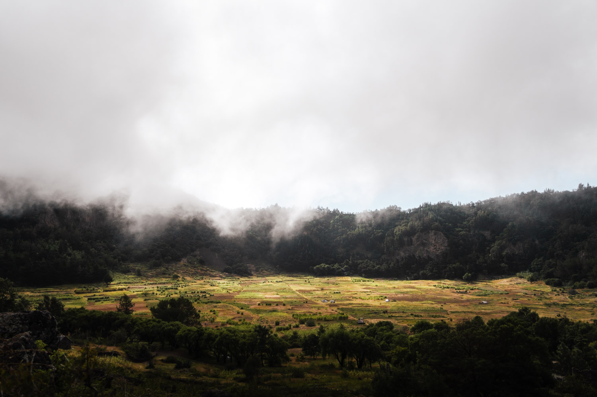
Nous découvrons de temps en temps des bananeraies et quelques habitations isolées. Nous débouchons sur une ligne de crête où nous nous arrêtons faire quelques photos : la vue est imprenable sur la mer et sur la vallée. Nous y rencontrons une habitante dont le mari à construit la maison en montant chaque parpaing un par un. Nous lui achetons un pot de confiture de goyaves et poursuivons. Notre dernière descente s’effectue entre des terrasses cultivées. Nous entendons les bruits d’animaux de ferme et croisons quelques habitants. L’après-midi est déjà bien avancé et lorsque nous parvenons en bas de la vallée, notre priorité est de trouver un endroit où bivouaquer. Notre recherche nous amène jusqu’au dernier village dans lequel nous rencontrons un ouvrier qui nous propose de nous héberger. Nous sommes touchés par cette proposition et nous espérons qu’il tiendra sa parole. Nous rejoignons le littoral où l’ouvrier habite pour attendre qu’il finisse sa journée de travail. Nous rencontrons alors un couple de Français hébergé dans une chambre d’hôte. Après quelques minutes de réflexion, nous décidons de les rejoindre. La nuit tombe et nous voulons nous assurer un toit pour la nuit. Après quelques négociations avec la propriétaire de l’établissement, nous disposons d'une chambre et d’un accès à une salle de bain. Le rêve ! Nous n’avons pas dormi dans une maison depuis notre départ de Brest et cette nuit est plus que réparatrice.
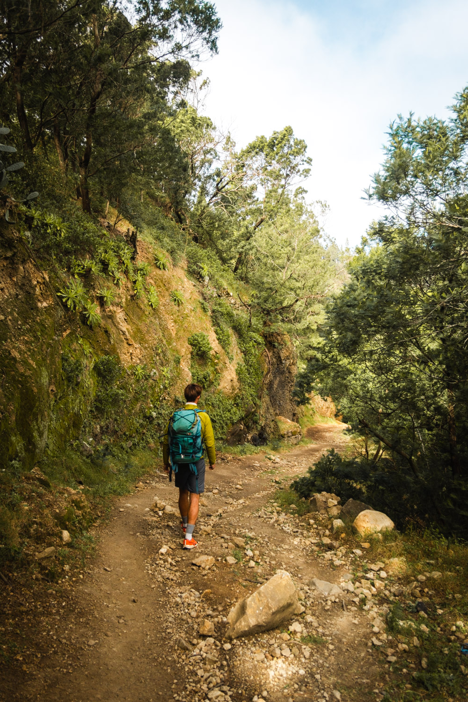
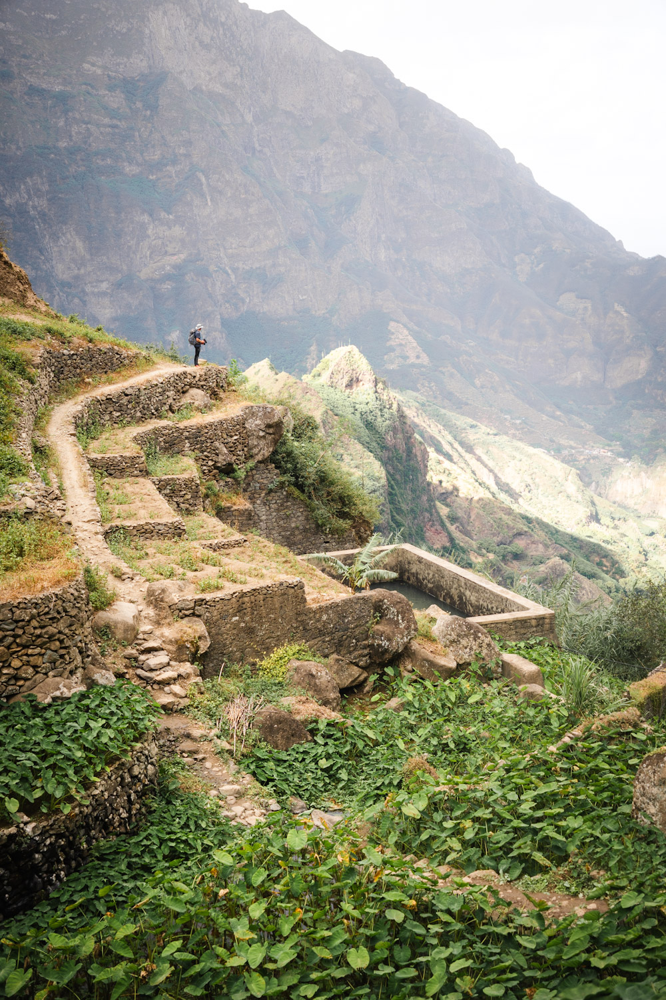
Nous quittons le gîte de bonne heure et prenons un premier aluguer qui nous emmène à Ponta do Sol, village remarquable pour son aéroport abandonné. Nous montons dans un second minibus après une séance photo. Direction Ribeira Grande où nous espérons trouver un aluguer qui nous ramène au ferry en passant par les crêtes. Bon nombre de chauffeurs acceptent de le faire pour un prix élevé. Nous nous mettons alors en quête d’un groupe de touristes avec qui nous pourrions partager le trajet. En discutant avec quelques étudiants, ils nous pointent un aluguer collectif qui monte jusqu’à notre point de départ de la veille. Le moteur du minibus cri alors qu’il grimpe le long des crêtes. Nous avons une vue imprenable sur la vallée de Paùl que nous avons descendue la veille. Au fur et à mesure que nous montons, la température et la visibilité baissent. Les passagers descendent rejoindre leurs habitations et le chauffeur s’arrête livrer des colis. Il nous dépose au point de départ de notre randonnée de la veille. Il fait vraiment froid et nous avons oublié de prendre un briquet pour manger des plats lyophilisés. Nous attendons qu’un autre aluguer passe pour nous ramener à Porto Novo.
Nous quittons Mindelo après avoir rempli les démarches administratives obligatoires quand on change d’île au Cap-Vert. Nous remontons vers le nord au près puis virons pour partir à l’est. Nous visons Santa Lucia, une île déserte protégée par une réserve naturelle. Nous y arrivons le soir et profitons d’un magnifique coucher de soleil.
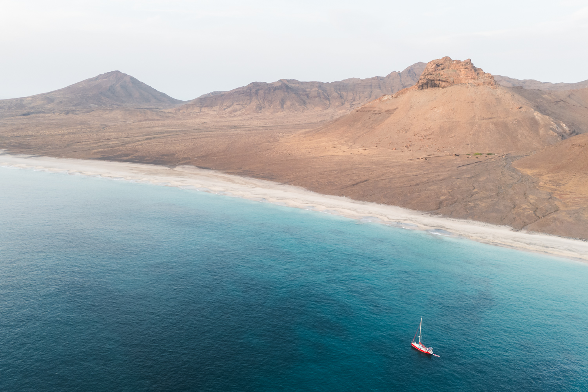
Les lumières du matin nous révèlent la clarté de l’eau et la beauté des paysages. Clément part en éclaireur faire le tour d’un rocher. Il revient émerveillé par la faune marine. Après le déjeuner, Loann va y faire un tour et jure que c’est la plus belle plongée qu’il ait faite. Clément frotte la coque du bateau et je vais nager le long de la plage. Nous nous retrouvons pour profiter des dernières lueurs de la journée. Nous sommes deux bateaux au mouillage et il n’y a pas un bruit.
Partis dans la matinée nous naviguons entre les îles sauvages de Ilhéu Branco et Ilhéu Raso. Je les filme en drone. Leur roche noir et l’eau rendue grise par la couverture nuageuse transforme Tsanteleina en une boule de feu au milieu des cendres. Loann met une ligne de pêche à l’eau qu’il n’a pas le temps de dérouler complètement car déjà une dorade coryphène mord. Il s’arme de son courage et de son couteau pour la vider et lever les filets. Peut-être aurait-il pu éviter de la faire lorsque nous touchions du vent soutenu au travers. C’est une remarque qu’il me fait lorsque nous nous retrouvons collés dans une mer d’huile, à l'abri de São Nicolau. Nous mettons le moteur pour passer la pointe puis finissons à la voile. Nous mouillons près de Carriçal, à l’est de l’île. Un vent sec souffle et nous assèche les yeux et les voies respiratoires.
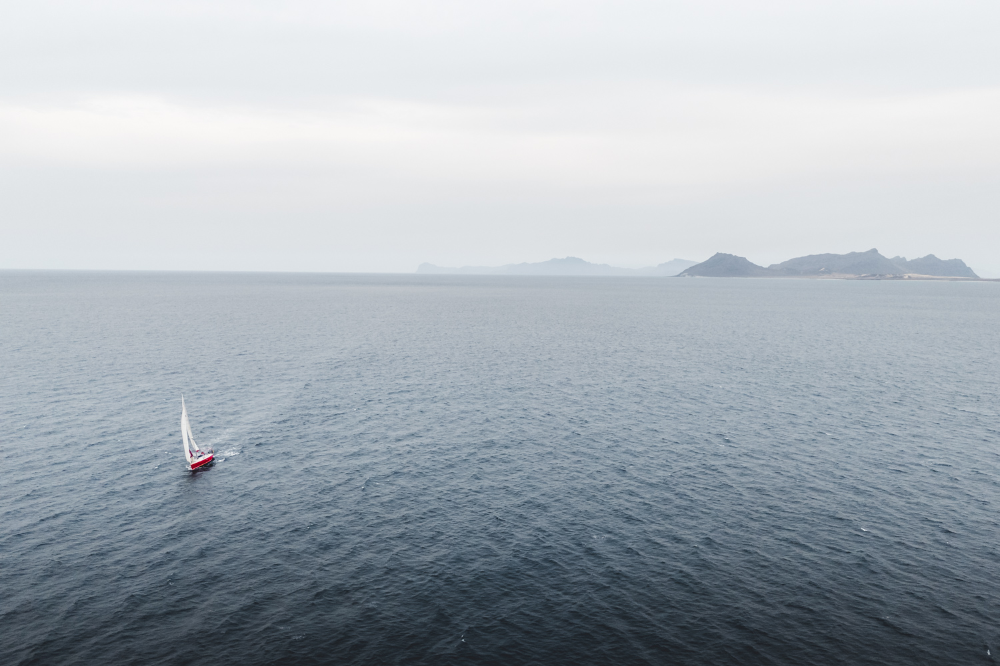
La nuit est mauvaise. L’anémomètre affiche des rafales à près de 35 nœuds quand je me lève le lendemain. Le bateau se balance autour de sa chaîne. Nous décidons donc de partir sans avoir mis pied à terre.
Nous arrivons en fin d'après-midi à Boa Vista. Nous jetons l’ancre à l’arrière du mouillage car la nuit est tombée. Le lendemain, la nature du lieu se révèle. À gauche, un lagon rempli de planches à voile. Au centre, des hauts-fonds permettant aux vagues de déferler font le bonheur des surfeurs. À droite, des kites tirent des bords dans une grande baie. Avant d’en profiter, il nous faut nous restaurer. Et quoi de plus local que cuisiner un bon fish and chips ? Se retrouver avec des pommes de terre pleine d’huile et du poisson enrobée d’une chapelure étrange bien sûr ! Notre essai culinaire ira dans la catégorie des « à ne pas reproduire ». Clément et Loann montent leur wing, je monte la planche à voile et… fait tomber une pièce essentielle dans l’eau. Je plonge à plusieurs reprises sans parvenir à mettre la main dessus. Je vais faire le tour des magasins de location pour voir s’ils vendent cette pièce pendant que Loann et Clément profitent du plan d’eau. Je prendrai ma revanche le lendemain matin.
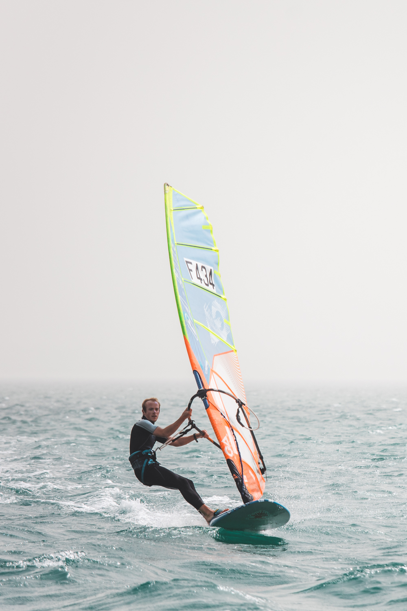
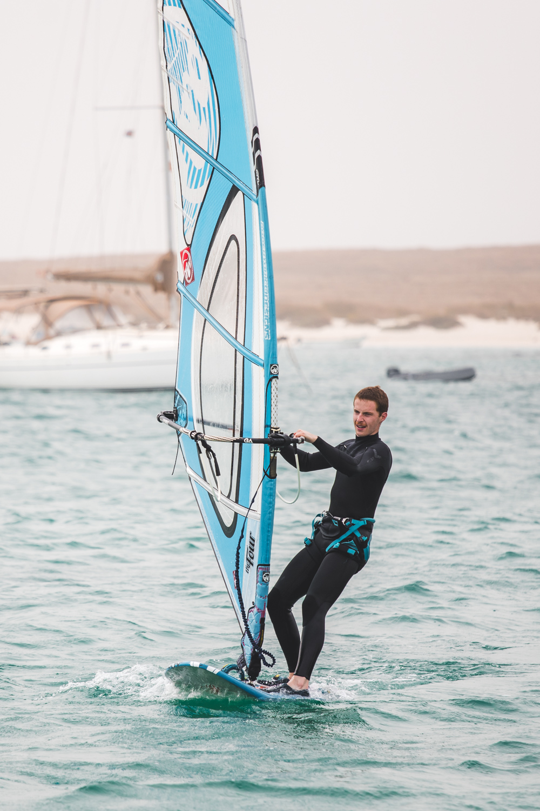
Nous partons à terre faire des courses et chercher des cartes SIM prépayées. Nous trouvons une épicerie asiatique qui nous fera payer une somme bien supérieure au total de nos articles et une agence de téléphonie qui nous propose des prix différents (dans le mauvais sens évidemment) de ceux inscrits sur une brochure. Nous rentrons nous consoler sur l’eau en planche à voile et wing.
Le lendemain est une journée à marquer d’un foil blanc. Loann vole en wing ! Il est maintenant presque autonome pour remonter au vent et n’a plus besoin de Clément pour l’assister. Ils sont tous les deux soulagés. Nous passons la matinée à bricoler sur le moteur avec Loann.
Nos proches nous rejoignent pendant deux semaines pour fêter Noël à Boa Vista puis le nouvel an à Santiago. Nous profitons de ces temps de retrouvailles, bien loin de la fraîcheur métropolitaine.
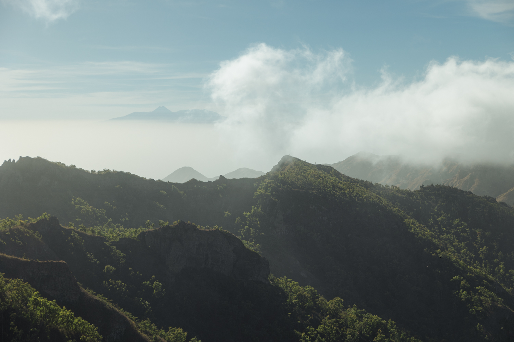
Nous passons quelques jours à Mindelo pour préparer notre transatlantique. Nous terminons quelques travaux importants, remplissons les réservoirs d’eau et achetons des produits frais. L’ambiance est bien différente de celle que nous avions observée début décembre. Chaque jour des cornes de brume annoncent les départs de bateaux pour leur transatlantique. Les discussions s’orientent toutes vers les craintes et les astuces d’organisations des équipages. Nous avons à peine le temps d’y prendre part, nous voulons quitter Mindelo au plus vite pour profiter des Antilles plus longtemps. Un dernier burger, une dernière douche et nous nous lançons dans la plus grande navigation que nous n’ayons jamais entreprise.